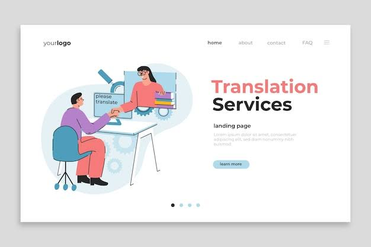

1. Keep It Relevant
Focus your introduction on details the interviewers would
find most relevant. Tailor it based on the role and company.
For example, for a teaching job highlight your education, experience
with students and teaching skills. For a sales job, feature your
sales achievements, customer service skills and product knowledge.
2. Structure Your Content
Organize your content in a clear, logical structure:
• Name and where from
• Education/degree and school
• Work experience and achievements
• Skills and strength
•Interest or hobby
3. Emphasize Skills
Carefully choose which of your skills, strengths and
achievements to highlight based on the target job.For
example, creative skills for design roles, analytical
abilities for accounting, collaboration for team-oriented
jobs, and so on. Give specific examples of using those
skills successfully.
5. Keep Within 2 Minutes
Interview introductions should be kept short - ideally
Provide a concise overview of your most relevant
credentials. Elaborating can come later during the
actual interview
6. Practice Aloud
Practice introducing yourself out loud several times before
the interview. Get feedback frofriends.
This boosts your delivery and reduces nervousness. Practice until
the flow sounds natural
7. Show Enthusiasm
Sounding genuinely excited about the company and job opportunity
creates a very positive impression.
For example, "I'm truly excited about the chance to join ABC
Company's innovative marketing team."
8. Listen to Cues
If the interviewers jump in with questions part way through your
introduction, take the cue to wrap up quickly. Don't keep talking
Aim to give concise responses from that point to best answer their
questions.
9. Close on a Positive Note
End your introduction by expressing enthusiasm for the job interview
and your interest in the position.
For example, "I'm looking forward to discussing how I can contribute
to this role." This finish well.
Following these tips will make your self- introduction highly effective
and help get the interview off to a great start!